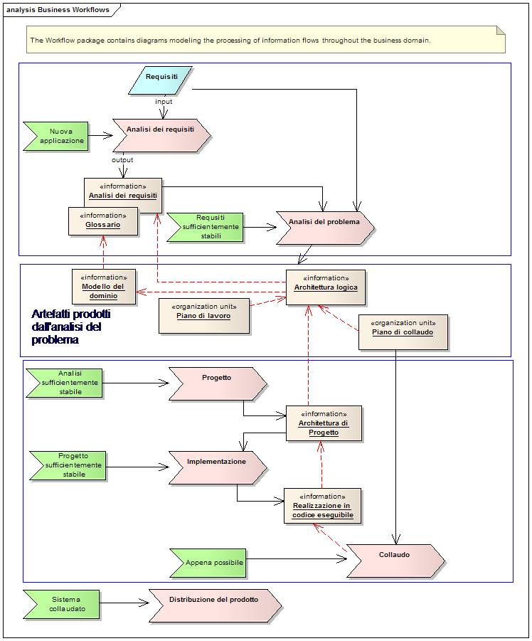
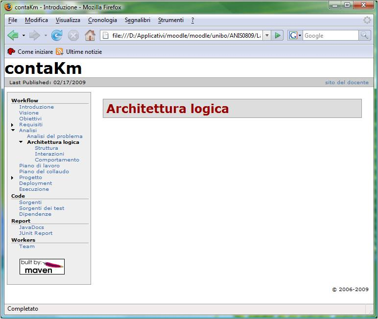
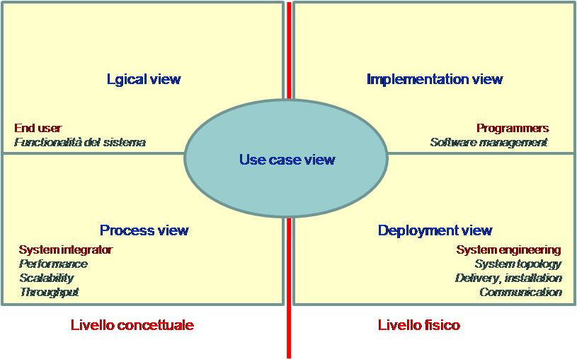
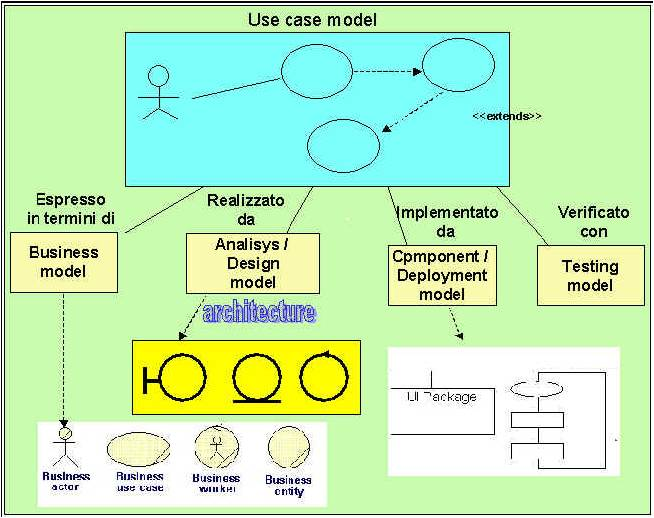

In un processo di produzione che mira a costruire un prodotto software a partire dai requisiti di un committente, gli elementi logici che svolgono un ruolo strategico possono essere riassunti attraverso l'activity diagram UML che segue.

La richiesta di sviluppo di una nuova applicazione innesca la fase di analisi dei requisiti che, in stretta cooperzione con il committente, produce alcuni artefatti essenziali tra cui un modello dei casi d'uso (use cases) con relativi scenari, un glossario dei termini usati nel documento che descrive i requisiti e un primo modello del dominio indipendente dalle tecnologie realizzative e, per quanto possibile, anche dalla specifica applicazione in esame.
Non appena l'analisi dei requisiti raggiunge uno stadio sufficientemente stabile, si passa ad enucleare i principali problemi posti dall'applicazione. Dall'analisi dei problemi si cerca di capire se siamo in un contesto già affrontato da altri, iniziando anche a tenere conto di requisiti non funzionali (si veda Requisiti non funzionali). Un possibile punto di riferimento è la pattern community, che potrebbe avere già proposto uno o più pattern languages (si veda Pattern languages) relativi al problema in esame. Nel caso esista un pattern language affine, un'attenta lettura del pattern language aiuterà a comprendere meglio il problema ed ad approfondire l'analisi grazie alle esplcita enuniciazione del contesto e delle forze in gioco. Nel caso in cui non si trovi alcun pattern language di riferimento, la fase di analisi del problema dovrà richiedere più tempo, attenzione e risorse umane.
La fase di analisi produce vari artefatti che trovano la loro sintesi nella definizione di una architettura logica che può essere vista come la specifica di un insieme di vincoli (strutturali, comportamentali e di interazione) imposti dal problema e/o dal dominio applicativo; tali vincoli devono essere individuati tenendo conto dei requisiti, dell'ambiente e del contesto socio-economico in cui si inserisce l'applicazione, evitando di introdurre vincoli dettati da specifiche tecnologie realizzative (a meno che queste non siano esplicitamente menzionate nei requisiti).
Esempio: una ditta viene incaricata del progetto del ponte sullo stretto di Messina, Dopo avere analizzato le caratteristiche del territorio e del tratto di mare da attraversare, la ditta potrebbe concludere che l'architettura (logica) del ponte dovrà essere a una sola campata; ciò in quanto si è valutato troppo rischioso (per via delle correnti, venti, etc) o troppo antieconomico (per la profondità, etc). pensare di installare pilastri di supporto in mezzo al mare.
Gli artefatti (modelli) scaturiti dall'analisi, e in particolare l'architettura logica, costituiscono gli elementi fondamentali per una accurata analisi dei rischi e una prima pianificazione del lavoro, nel quadro di un processo di tipo iterativo. Da essi si anche ricavare un primo insieme di piani di collaudo utili ad agevolare la integrazione di sistema e a supportare processi test-driven.
Dalla fase di analisi del problema il responsabile del progetto ricava informazioni essenziali per oragnizzare i tempi e i modi delle fasi successive del processo di sviluppo, tenendo conto delle risorse disponibili. Se l'architettura logica del sistema mostra che questo può essere articolato in più sottosistemi, allora il project leader può attivare, anche in parallelo, diverse linee di progettazione e sviluppo. Poichè è essenziale che venga garantita la possibilità di integrazione del diversi sottositemi nell'unico sistema finale, il project leader cura con la massima attenzione le modalità di interazione tra i sottosistemi e definisce precisi vincoli (se possibile in forma di piani di colaudo) per ciascun sottosistema.
La fase di progettazione (di un sottosistema) mira non solo a individuare e descrivere una soluzione al problema (what), ma soprattutto a descrivere i motivi (why) che determinano la soluzione proposta.
La fase di progettazione dovrebbe procedere dal generale al particolare, svilppando per prime le parti più critiche individuate dall'analisi. I pattern languages possono essere usati per impostare un processo di sviluppo incrementale il cui risultato consiste in una specifica pattern sequence [POSA5]. La progettazione non procede necessariamente a cascata, ma può dare luogo a refactoring (di progetto) e può produrre anche retroazioni sulla fasi precedenti. Al progressivo sviluppo dell'architettura del sistema corrisponde un progressivo raffinamento dei piani di collaudo.
La progettazione può essere notevolmente influenzata (ed anche agevolata) dall'uso di piattaforme operative sviluppate da terze parti in forma di framework o di product-line architectures (si veda Sviluppo basato su framework). Idealmente però la fase di progettazione mira a dare risposte a problemi posti dall'applicazione; essa dovrebbe avvenire quindi in modo il più possibile platform-independent, così che la realizzazione possa poi avvenire su piattaforme operative diverse.
Il codice di implementazione dovrebbe essere il più possibile allineato con la soluzione logica scaturita dalla fase di progetto. Questo obiettivo viene facilmente raggiunto nel caso in cui sia possibile generare il codice in modo automatico dai modelli che rappresentano il progetto. Nel caso in cui non sia possibile adottare approcci generativi, la tracciabilità (si veda Requisiti) deve essere mantenuta in modo esplicito dagli sviluppatori. La produzione del codice avviene comunque in un contesto vincolato dai piani di collaudo definiti nelle fasi precedenti.
In sintesi si può affermare che non si tratta solo di costruire un prodotto
... ma di porre attenzione al processo di produzione ...
... costruendo artefatti (prevalentemente in forma di modelli UML) ...
... con particolare riguardo agli artefatti di analisi e di progetto ...
... al fine di promuovere e sostenere un'organizzazione cooperativa ed evolutiva del lavoro.
L'analisi dei requisiti, l'analisi del problema e la progettazione richiedono infatti forti interazioni tra persone, in particolare colleghi di lavoro (analisti, progettisti, etc) ed utenti finali.
L'introduzione di adeguati modelli espressi in UML può risultare fondamentale per il miglioramento della comunicazione e della comprensione reciproca; i modelli di progetto possono inoltre già costituire la specifica finale per il sistema, nel caso in cui sia possibile la generazione automatica di (parte del) codice su specifiche piattaforme.
|
Figure 1. Sito di progetto

|
|
Figure 2. I modelli nel processo

|
|
Figure 3. Un sistema integrato di modelli

|
Concludiamo queste note di carattere generale osservando che la definizione di un sistema software implica spesso la definizione di una collezione di domini e di dipendenze tra domini. Il termine dominio denota un mondo relativamente autonomo, reale o astratto, costituito da un insieme di entità che operano in accordo a precise regole, politiche e vincoli. Categorie di domini frequentemente usate sono:
Un dominio viene rappresentato in UML da un package. Un dominio può fare assunzioni sulla esistenza di altri domini, caratterizzati da precise proprietà.